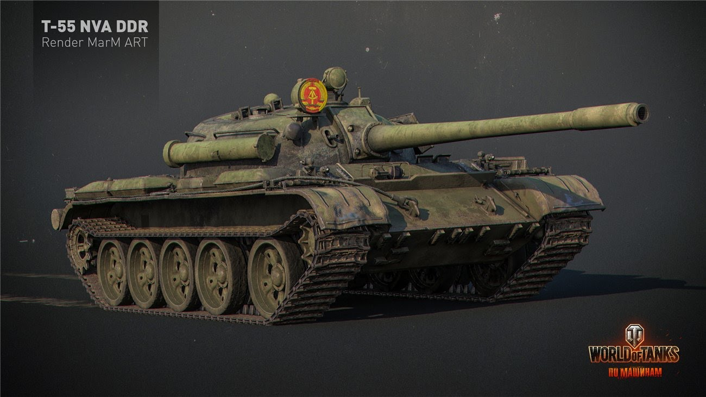

ЛИЧНЫЕ БОЕВЫЕ ЗАДАЧИ НА T 55A

T 55A
Т 55А являлся усовершенствованным вариантом танка Т-55. Отличался повышенным уровнем противоатомной защиты и отсутствием курсового пулемёта. Около 1800 танков Т-55 и Т 55А было поставлено из СССР в ГДР в период с 1962 по 1970 год.
Условия выполнения ЛБЗ:
- Наличие в ангаре техники соответствующего уровня и выше
- Желательно наличие премиум-аккаунта
- Срок выполнения: договорной